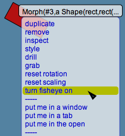

Lively Kernel Tutorial: (17) More Advanced UI Features
Back to Introduction
PREVIOUS
Source code of this demo
NEXT
Explain the following features here:
fisheye,
reset rotation/scaling,
put me in a window/tab/open

Notes:
Notes, if any, go here.
Try it yourself!
...